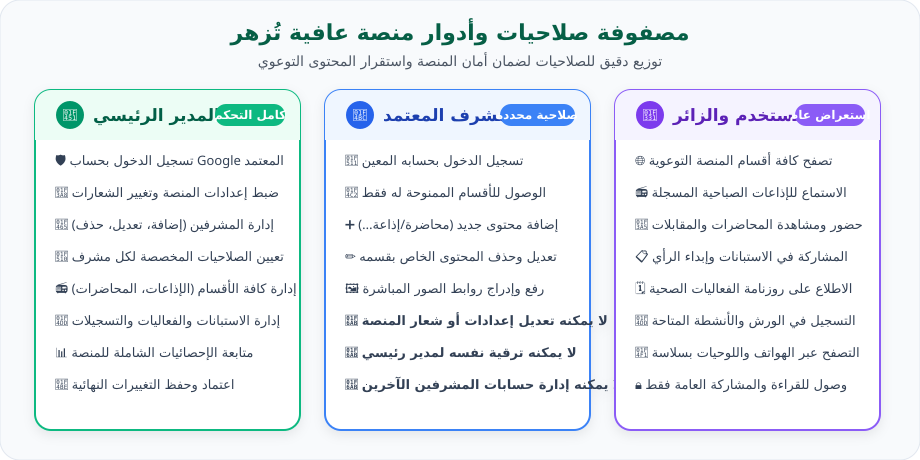
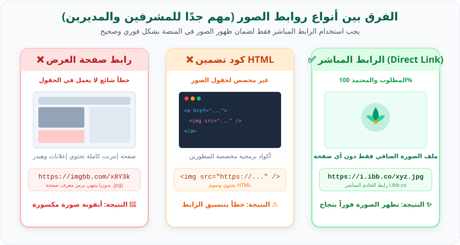
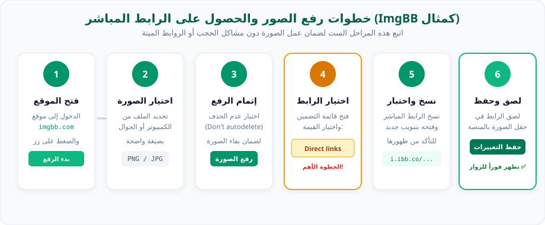

منصة «عافية تُزهر» (Blooming Wellness) هي مبادرة إلكترونية وتوعوية صحية مصممة لتعزيز نمط الحياة الصحي والنشاط البدني والنفسي في البيئات التعليمية والمدرسية والمجتمعية، من خلال تقديم محتوى إرشادي متكامل يزهر بالصحة والحيوية.
💡
تنويه استقلالية الدليل
هذا الموقع هو دليل إرشادي مستقل تمامًا لشرح طريقة الاستخدام والإدارة، ولا يقوم بأي اتصال مباشر بقاعدة بيانات المبادرة أو تعديل صلاحيات مستخدميها تلقائيًا.
الأنشطة والفعاليات الصحية:روزنامة بالورش والمسابقات الميدانية، وروابط للتسجيل المباشر فيها.
نظرة عامة/مصفوفة الصلاحيات
مصفوفة الأدوار والصلاحيات في المنصة
تعتمد منصة عافية تُزهر على هيكل أمني صارم يفصل بين المدير الرئيسي، المشرفين المفوضين، والزوار. يوضح المخطط والجدول أدناه مسؤولية كل طرف:

رسم توضيحي: هرمية الصلاحيات والحدود الإدارية في منصة عافية تُزهر
↔️مرر الجدول أفقيًا لمشاهدة جميع الصلاحيات
الخاصية / الإجراء
المدير الرئيسي (Super Admin)
المشرف المعتمد (Supervisor)
المستخدم والزائر (Visitor)
تصفح المحتوى والأنشطة
✅ متاح
✅ متاح
✅ متاح
المشاركة في الاستبانات والتسجيل
✅ متاح
✅ متاح
✅ متاح
تسجيل الدخول للوحة التحكم
✅ نعم (بحساب Google المعتمد)
✅ نعم (بحساب المشرف المصرح)
❌ غير متاح
إضافة وتعديل المحتوى الموكل
✅ متاح لجميع الأقسام
✅ متاح للأقسام المصرح بها فقط
❌ غير متاح
تغيير هوية المنصة والشعارات
✅ متاح (إذا توفرت باللوحة)
❌ محظور تمامًا
❌ غير متاح
إضافة أو حذف المشرفين وتعديل صلاحياتهم
✅ صلاحية حصرية للمدير
❌ محظور (لا يمكنه ترقية نفسه)
❌ غير متاح
الاطلاع على إحصائيات المنصة الكلية
✅ متاح بلوحة القياس
⚠️ محدود بالقسم الموكل
❌ غير متاح
دليل المدير الرئيسي/تسجيل الدخول بلوحة الإدارة
تسجيل الدخول بحساب Google المعتمد
المدير الرئيسي
يتم حماية لوحة إدارة منصة عافية تُزهر من خلال نظام مصادقة آمن باستخدام حساب Google. لضمان أقصى درجات الأمان، يتم منح صلاحية «المدير الرئيسي» فقط للبريد الإلكتروني المعتمد مسبقًا في سجلات المبادرة.
1
الوصول إلى زر الدخول في المنصة
افتح منصة عافية تُزهر، وانتقل إلى أعلى الصفحة أو التذييل واضغط على زر «تسجيل الدخول» أو أيقونة القفل الإداري.
2
اختيار تسجيل الدخول عبر Google
انقر على خيار «Sign in with Google». ستفتح نافذة منبثقة رسمية وآمنة من Google لتحديد حسابك.
3
اختيار البريد الإلكتروني المعتمد للمدير
تأكد من اختيار نفس حساب Google المصرح له كمدير رئيسي للمنصة. إذا سجلت بحساب شخصي آخر، ستظهر لك رسالة تفيد بأنك زائر عادي ولن تفتح لوحة الإدارة.
4
التحقق وفتح لوحة الإدارة
بمجرد اكتمال تسجيل الدخول، ستقوم المنصة بفحص الصلاحيات تلقائيًا، وسيظهر تبويب «لوحة الإدارة» (Admin Panel) في شريط التنقل العلوي للموقع.
⚠️
ماذا تفعل إذا لم تظهر لوحة الإدارة بعد الدخول؟
تأكد من أنك لست مسجلاً بحساب Google ثانوي في المتصفح. سجّل الخروج ثم أعد الدخول مع اختيار البريد الإداري الصحيح، وتأكد من تحديث الصفحة (Refresh).
دليل المدير الرئيسي/لوحة الإدارة والإحصائيات
الوصول إلى لوحة الإدارة ومتابعة الإحصائيات
تعتبر لوحة الإدارة مركز القيادة والتحكم لمنصة عافية تُزهر. توفر اللوحة واجهة بديهية تسمح بمراقبة تفاعل الزوار ومؤشرات الأداء للمبادرة:
عداد الزيارات والمشاهدات:إجمالي عدد الزوار وتفاعلهم مع مختلف الأقسام الصحية.
إحصائيات الاستبانات:عدد الردود المكتملة على الاستبانات الصحية ونسب الرضا والوعي.
أعداد المسجلين بالفعاليات:متابعة قوائم المشاركين في ورش العمل والمسابقات الميدانية.
حالة المحتوى:بيان المحاضرات والإذاعات النشطة والمسودات قيد المراجعة.
دليل المدير الرئيسي/إعدادات الموقع والشعارات
إدارة إعدادات المنصة وتغيير الشعارات
يتيح تبويب إعدادات الموقع للمدير الرئيسي تحديث الهوية البصرية وعناوين المنصة.
ملاحظة دقيقة: تتاح خيارات إدارة الشعارات بحسب ما تم تفعيله في لوحة الإدارة البرمجية للموقع.
طريقة تحديث شعار المبادرة أو شعار الوزارة:
ادخل إلى لوحة الإدارة وانقر على تبويب «إعدادات الموقع» (Site Settings).
ابحث عن حقل «رابط شعار المبادرة» أو «رابط شعار الوزارة» (إذا كانت الخاصية متاحة باللوحة).
قم برفع صورة الشعار المعتمدة (بصيغة PNG ذات خلفية شفافة مفضلة) على موقع استضافة واحصل على الرابط المباشر (راجع دليل الصور المباشرة).
الصق الرابط المباشر في الحقل المخصص. ستظهر لك معاينة فورية للشعار الجديد بجانب الحقل إذا كان الرابط صحيحًا.
اضغط على زر «حفظ التعديلات» للتثبيت.
افتح واجهة الموقع في تبويب جديد أو متصفح خفي للتأكد من ظهور الشعار في رأس الموقع للمستخدمين.
🚫
تجنب لصق روابط صفحات العرض
إذا قمت بلصق رابط صفحة استضافة مثل (imgbb.com/xyz) بدلًا من رابط الملف الصافي (i.ibb.co/xyz.png)، سيظهر الشعار كصورة معطوبة أو لن يظهر إطلاقًا.
دليل المدير الرئيسي/الإذاعات الصباحية
إدارة الإذاعات الصباحية المدرسية
تمثل الإذاعة الصباحية الركيزة اليومية للتوعية الصحية في منصة عافية تُزهر. يمكن للمدير إضافة إذاعات جديدة، تعديل نصوصها، أو ربطها بملفات صوتية:
➕
إضافة إذاعة جديدة
اضغط على زر «إضافة إذاعة صباحية جديدة»، واملأ عنوان الإذاعة (مثال: «التغذية الذكية ليوم دراسي مفعم بالحيوية»)، وتاريخ النشر، والمحاور الإرشادية.
🔊
إرفاق التسجيل الصوتي أو النص
أدخل الرابط المباشر للتسجيل الصوتي (إن وجد) أو اكتب الكلمة الإذاعية الكاملة ليتمكن الطلاب ومسؤولو الإذاعة المدرسية من قراءتها.
💾
النشر والحفظ
اختر حالة النشر «منشور للعامة» ثم اضغط «حفظ». تظهر الإذاعة فورًا في قسم الإذاعات على الصفحة الرئيسية للزوار.
دليل المدير الرئيسي/المحاضرات التوعوية
إدارة المحاضرات التوعوية
يتيح هذا القسم توثيق المحاضرات واللقاءات الصحية التي تنظمها المبادرة:
عنوان المحاضرة واسم المحاضر:تدوين اسم الطبيب أو الأخصائي الصحي المعتمد مع صفته المهنية.
صورة غلاف المحاضرة:إدراج رابط مباشر لصورة البوستر التعريفي للمحاضرة.
رابط المشاهدة أو التسجيل:إدراج رابط فيديو اليوتيوب أو المنصة الافتراضية للقاء.
محاور المحاضرة وتلخيص الفوائد:نقاط إرشادية مختصرة يستفيد منها الزائر سريعًا.
دليل المدير الرئيسي/المقابلات الحوارية
إدارة المقابلات الحوارية
المقابلات الحوارية تعزز الشراكة مع الخبراء والطلاب الملهمين. يمكن للمدير إضافة مقابلة جديدة، تحديد موضوع النقاش، إرفاق رابط الفيديو أو البودكاست، وربطها بالوسوم الصحية ذات الصلة.
دليل المدير الرئيسي/الاستبانات وقياس الأثر
إدارة الاستبانات وقياس الأثر الصحي
تمكن الاستبانات إدارة المنصة من قياس أثر الأنشطة وتغذية راجعة من الطلاب والمعلمين وأولياء الأمور:
إنشاء استبانة جديدة بعنوان محدد وتحديد الفئة المستهدفة.
إدراج رابط الاستبانة (نماذج Google Forms أو Microsoft Forms أو النموذج الداخلي للمنصة).
تحديد تاريخ الإغلاق وتفعيل أو إيقاف استقبال المشاركات بنقرة واحدة.
مراجعة تقرير الردود وتحميل ملخص النتائج لتحسين الفعاليات القادمة.
يمكن للمدير تعديل نطاق أي مشرف في أي وقت بإلغاء تحديد الأقسام، أو النقر على «حذف المشرف» لإنهاء صلاحية دخوله تمامًا.
🛡️
قاعدة الأمان الذهبية
المشرفون لا يستطيعون رؤية شاشة إدارة المشرفين، ولا يستطيعون منح أنفسهم أو غيرهم أي صلاحيات إضافية.
دليل المدير الرئيسي/حفظ وتأكيد التغييرات
حفظ التغييرات والتأكد من ظهورها للزوار
لضمان وصول التعديلات إلى زوار المنصة دون فقدان للبيانات:
بعد الانتهاء من إدخال أي نص أو رابط، اضغط على زر «حفظ التغييرات» (Save Changes) باللون الأخضر.
انتظر حتى تظهر لك رسالة التنبيه الخضراء: «تم الحفظ بنجاح». لا تغلق المتصفح قبل اكتمال الحفظ.
افتح نافذة تصفح خفي (Incognito Window) أو قم بتحديث صفحة الموقع الرئيسية بالضغط على Ctrl + F5 لمسح الكاش والتأكد من ظهور المادة الجديدة مباشرة للزوار.
دليل المشرفين/تسجيل الدخول والصلاحيات
تسجيل دخول المشرف والتعرف على الصلاحيات
المشرف المعتمد
يدخل المشرف بحسابه الإلكتروني المعتمد الذي أضافه له المدير الرئيسي. عند تسجيل الدخول، تعرض المنصة فقط الأقسام المخصصة لهذا المشرف وفقًا لما حدده المدير.
💡
كيف أعرف صلاحياتي كمشرف؟
بمجرد دخولك للوحة المشرف، ستظهر في القائمة الجانبية الأقسام الممنوحة لك فقط (مثلاً: الإذاعات الصباحية والأنشطة). الأقسام الأخرى التي لم يتم تفويضك بها لن تظهر لك في القائمة.
دليل المشرفين/إدارة المحتوى الموكل
إضافة وتعديل وحذف المحتوى
بإمكان المشرف إدارة محتوى قسمه بسهولة عبر الخطوات التالية:
إضافة مادة جديدة:انقر زر «إضافة جديد» داخل قسمك المتاح، واكتب العنوان والنصوص والتاريخ المطلوب.
تعديل مادة سابقة:انقر على أيقونة القلم (تعديل) بجانب المادة السابقة، قم بتحديث النصوص أو الروابط، ثم اضغط حفظ.
حذف مادة:انقر على أيقونة الحذف مع التأكيد. تنبيه: الحذف نهائي لذلك يُنصح بمراجعة المحتوى قبل الحذف.
دليل المشرفين/حدود الصلاحية الصارمة
حدود صلاحية المشرف والأمان الإداري
حرصًا على سلامة المنصة واستقرار بياناتها، تم ضبط الصلاحيات بضوابط برمجية دقيقة:
⛔
تنبيهات أمنية هامة للمشرفين
لا يستطيع المشرف تعديل شعار المبادرة أو هوية المنصة أو العناوين العامة.
لا يستطيع المشرف الدخول لقائمة المشرفين أو إضافة مشرف آخر أو تعديل صلاحياته.
لا يستطيع المشرف ترقية نفسه إلى مدير رئيسي (Super Admin) تحت أي ظرف.
أي محاولة وصول لروابط غير مصرح بها ستعرض رسالة: «عفوًا، ليس لديك الصلاحية الكافية للوصول إلى هذا القسم».
دليل الزائر والمستخدم/تصفح أقسام المنصة
تصفح أقسام منصة عافية تُزهر
المستخدم والزائر
صُممت واجهة منصة عافية تُزهر لتكون تجربة مبهجة وهادئة وسريعة لجميع الطلاب وأولياء الأمور والمعلمين والزوار دون الحاجة لتسجيل حساب مسبق للتصفح:
شريط التنقل العلوي:للوصول السريع إلى الصفحة الرئيسية، الإذاعات، المحاضرات، المقابلات، والفعاليات.
البحث والاستكشاف:يمكنك البحث عن أي نصيحة صحية أو محاضرة من خلال خانة البحث.
البطاقات التفاعلية:عرض أنيق لملخص الفعالية مع مؤقت زمني وتفاصيل المشاركة.
دليل الزائر والمستخدم/الإذاعات والمحاضرات والمقابلات
بتلات الزهرة متعددة الألوان:تعبر عن كلمة «تُزهر» وتكامل الركائز الأربع للعافية التامة.
دليل الصور والشعارات/ما هو الرابط المباشر؟
الفرق الحاسم بين أنواع روابط الصور (مهم جدًا)
قسم جوهري
يعد هذا القسم من أهم أجزاء هذا الدليل، حيث إن السبب الأول لعدم ظهور الصور في المنصة هو وضع رابط صفحة موقع الاستضافة بدلاً من رابط ملف الصورة المباشر الصافي.

رسم توضيحي: مقارنة بصرية شاملة بين رابط صفحة العرض، كود HTML، والرابط المباشر المعتمد
💡
ملاحظة تقنية حول امتداد الصورة:
لا تفترض أن كل رابط مباشر يجب أن ينتهي بامتداد ظاهر مثل .jpg أو .png، بل المعيار الأكيد هو أن الرابط المباشر عند فتحه في المتصفح يفتح لك الصورة وحدها في وسط الشاشة بخلفية سوداء أو رمادية دون أي إعلانات أو أزرار أو نصوص للموقع المضيف.
دليل الصور والشعارات/الخطوات الـ 12 للرفع
الخطوات الـ 12 بالتفصيل لتحويل الصور لروابط مباشرة (مثال ImgBB)
نستعرض هنا الخطوات العملية خطوة بخطوة باستخدام موقع استضافة الصور العالمي الشهير ImgBB (https://imgbb.com/):

مخطط تسلسل المراحل من رفع الصورة حتى الحفظ وظهورها للمستخدمين
انقر على الزر الأزرق الكبير في وسط الصفحة بعنوان «Start uploading» أو «بدء الرفع».
3
اختيار الصورة من جهازك
اختر ملف الصورة من جهاز الكمبيوتر أو مكتبة صور الجوال. تأكد من أن الصورة واضحة وذات دقة ملائمة.
4
ضبط خيار مدة الاحتفاظ بالصورة (هام)
في القائمة المنسدلة «Auto delete image»، اختر «Don't autodelete» (عدم الحذف التلقائي)، حتى تظل صورتك تعمل دائمًا في المنصة دون أن تنتهي صلاحيتها بعد أيام.
5
الضغط على زر «Upload» (رفع)
انقر على زر الرفع الأخضر بالأسفل.
6
انتظار اكتمال شريط الرفع
انتظر بضع ثوانٍ حتى يصل المؤشر إلى 100% وتظهر شاشة اكتمال الرفع بنجاح (Upload Complete).
7
فتح خيارات الروابط المنسدلة (Embed codes)
ستجد قائمة منسدلة أسفل المعاينة بعنوان «Embed codes» أو «أكواد التضمين». افتح هذه القائمة.
8
اختيار «Direct links» (الروابط المباشرة)
من القائمة المنسدلة، حدد خيار «Direct links». هذا هو الخيار الحاسم والمطلوب لمنصة عافية تُزهر!
9
نسخ الرابط المباشر
اضغط على زر «Copy» (نسخ) بجوار الرابط. ستلاحظ أن الرابط يبدأ بـ https://i.ibb.co/... (مع حرف i الخاص بالخادم المباشر).
10
اختبار الرابط في تبويب جديد قبل الاستخدام
افتح تبويبًا جديدًا في المتصفح، والصق الرابط واضغط Enter. إذا ظهرت الصورة وحدها في وسط المتصفح دون موقع ImgBB، فالرابط ممتاز وجاهز للاستخدام!
11
العودة للوحة المنصة ولصق الرابط
ارجع إلى لوحة تحكم منصة عافية تُزهر، والصق الرابط في حقل الصورة (سواء كان غلاف محاضرة، صورة إذاعة، أو شعار المنصة).
12
حفظ التعديلات والتأكد من ظهورها
انقر على زر «حفظ التعديلات»، ثم تفقد موقع المنصة للتأكد من ظهور الصورة بدقة ووضوح للزوار.
دليل الصور والشعارات/فحص ومعاينة الرابط المباشر
أداة فحص واختبار روابط الصور التفاعلية
يمكنك الآن اختبار أي رابط صورة قبل إدراجه في لوحة تحكم منصة عافية تُزهر للتأكد من أنه رابط مباشر سليم ويعمل دون أخطاء:
🧪
معمل فحص الرابط المباشر
الصق رابط الصورة الذي حصلت عليه واضغط «فحص الرابط» لمعاينته وتحليله فورًا:
💡
أمثلة سريعة للتجربة:
يمكنك تجربة كتابة رابط صفحة خاطئ مثل https://imgbb.com/sample لرؤية التنبيه، أو تجربة رابط مباشر لصورة الشعار لمعاينته فورًا!
دليل الصور والشعارات/تغيير الشعارات
طريقة تغيير شعار المبادرة وشعار وزارة التعليم
شعار المبادرة وشعار وزارة التعليم هما عنوان الهوية البصرية الرسمية لمنصة عافية تُزهر:
توفر الخاصية في لوحة الإدارة:تعتمد إمكانية تغيير الشعارين على وجود الحقول المخصصة لهما في لوحة تحكم المدير الرئيسي للموقع.
صيغة الشعار الموصى بها:يُفضل بشدة استخدام صيغة PNG أو SVG ذات خلفية شفافة للحصول على مظهر احترافي فائق النقاء يتناغم مع الألوان الفاتحة والداكنة.
الأبعاد المثالية:أبعاد مربعة أو أفقية بنسبة ارتفاع مناسبة (مثلاً 500x120 بكسل للشعار الأفقي، أو 256x256 للأيقونة).
الاختبار بعد الحفظ:بعد حفظ الرابط الجديد، تحقق من ظهور الشعار في رأس الموقع على الهاتف والكمبيوتر وفي الوضعين الفاتح والداكن.
دليل الصور والشعارات/أمان وخصوصية الصور
ملاحظات أمنية وإرشادات لحماية خصوصية الصور
💾
الاحتفاظ بنسخة أصلية في جهازك
احتفظ دائمًا بنسخة احتياطية على جهاز الكمبيوتر أو Google Drive لجميع الصور والشعارات الأصلية للمبادرة حتى لا تفقدها إذا حدث أي تغيير على موقع الاستضافة.
🚫
عدم رفع معلومات شخصية أو وثائق خاصة
لا ترفع صورًا تحتوي أرقام هوية، سجلات مدنية، أرقام هواتف شخصية، أو صورًا خاصة بالطلاب بدون موافقة رسمية موثقة إلى مواقع استضافة عامة.
🔒
عدم وضع مفاتيح API أو كلمات مرور بالملفات
يُمنع منعًا باتًا تضمين أي كلمات مرور، رموز سرية، أو مفاتيح برمجية داخل نصوص المقالات أو شفرات JavaScript العامة.
المشكلات الشائعة/الأسئلة الشائعة والحلول
حل المشكلات الشائعة (دليل تفاعلي)
إجابات عملية فورية
اضغط على أي مشكلة لاستعراض خطوات الحل بالتفصيل:
السبب الأكثر شيوعًا هو تسجيل الدخول بحساب Google مختلف عن البريد الإلكتروني المعتمد للمدير الرئيسي. خطوات الحل:
اضغط على زر تسجيل الخروج من المنصة.
سجل الدخول مجددًا، واختر البريد الإلكتروني الإداري المعتمد بدقة.
قم بتحديث الصفحة بالضغط على Ctrl + F5 (أو سحب الصفحة للأسفل بالهاتف).
هذا يعني أن حسابك مسجل كزائر عادي أو كمشرف ولكن لا يملك صلاحية للوصول إلى هذا القسم المحدد. خطوات الحل:
إذا كنت مشرفًا: تواصل مع المدير الرئيسي للمنصة ليقوم بتفعيل صلاحية هذا القسم لحسابك من لوحة إدارة المشرفين.
إذا كنت المدير الرئيسي: تأكد من أنك لم تسجل الدخول من حساب شخصي آخر بالخطأ.
هذا يعني بنسبة 99% أنك قمت بنسخ رابط صفحة العرض (Webpage URL) وليس الرابط المباشر للملف (Direct Link). خطوات الحل:
تأكد أن رابط ImgBB يبدأ بـ https://i.ibb.co/ وليس https://imgbb.com/.
تأكد من عدم انتهاء صلاحية الصورة عبر اختيار Don't autodelete أثناء الرفع.
راجع الخطوات الـ 12 بالتفصيل في هذا الدليل. في موقع ImgBB، من قائمة Embed codes اختر دائمًا Direct links، ثم اضغط Copy.
الأسباب المحتملة:
انقطاع اتصال الإنترنت لحظة الحفظ.
وجود حقل إلزامي فارغ (مثل عنوان المحاضرة أو التاريخ). تحقق من وجود أي تنبيه أحمر حول الحقول.
انتهاء جلسة تسجيل الدخول (Session Timeout). قم بتسجيل الدخول مرة أخرى ثم احفظ.
هذا يحدث عادة عندما يقوم المتصفح بعرض النسخة المخزنة مؤقتًا (Cached Copy). اضغط على Ctrl + Shift + R أو Ctrl + F5 في الكمبيوتر لإجبار المتصفح على تحميل أحدث نسخة من الخادم.
تأكد من أن متصفحك لا يحظر النوافذ المنبثقة (Pop-ups blocked)، واسمح بنوافذ Google المصرحة لمنصة عافية تُزهر، أو جرب فتح الرابط في متصفح حديث (Chrome / Edge / Safari).
في أعلى شريط التنقل الرئيسي للدليل ستجد زر English / العربية للتبديل الفوري بين اللغتين وتغيير اتجاه الصفحة، وبجانبه زر أيقونة الشمس/القمر للتبديل بين الوضع الفاتح والداكن. يتم حفظ خياراتك تلقائيًا في جهازك للمرات القادمة!